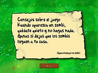
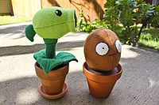

Plants vs. Zombies
 De: La Frikipedia, la enciclopedia extremadamente seria.
De: La Frikipedia, la enciclopedia extremadamente seria.

|
ATENCIÓN
Este artículo contiene demasiados tachones y en vez de provocar gracia, parece los apuntes de un niño de preescolar. Ya puede ser porque el autor es un novato, bien es un topo sin vista, o simplemente algún n00b que se cree que abusar del chiste mierdoso mola y no se da cuenta que jode bastante el artículo. Así que coge la goma de borrar y entra todas esas rayas para que el articulo deje de parecer una cebra. Si no sabes cómo empezar, mira en la discusión del artículo, puede que te ayude en algo.
|
De la serie Videojuegos:
Plants vs. Zombies

Un juego simple y sencillo, ¿No?
| Desarrollado por:
|
PopCap (La capa del Pop, véase Ropa de Michael Jackson)
|
| Distribuido por:
|
Taringa!
|
| Diseñado por:
|
Un jardinero
|
| Motor
|
Agua, Luz solar y Dióxido de Carbono
|
| Género(s)
|
Matar a zombies HOYGAN
|
| Fecha de lanzamiento:
|
Mazorcañón
|
| Modos de juego:
|
Disparar/explotar/golpear/morder zombies
|
| Requisitos:
|
Patio de frente, patio de atrás con piscina y tejado
|
| Disponible en:
|
caja de plástico/cartucho inmaterial
|
| Formatos:
|
Roca y maceta
|
| Edades:
|
Cuando aprendas a salir de casa
|
| Puntuaciones:
|
|
Como no seas un buen jardinero, despídete de tu rosado cerebro. (Si dudosamente tienes...)
«Los zombies son nuestros amigos, son unos incomprendidos que desempeñan una labor importante en el ecosistema»
~ Hipnoseta momentos después de fumar de la buena
«¿Cómo es posible que unas plantitas puedan vencer a un ejército de zombies?»
~ Fanático de Resident Evil en un momento de delirio
«Querido sesudo»
~ Zombi siendo educado a la hora de saludar en una carta
Plantas vs Zombies (También conocido como Plants vs Zombies, Plantas contra zombis o Plantas vs zombis) es un vidriogame del género "Tawer Defens". Que consta de poner unas plantitas de colorines para combatir a gente verde con cara de subnormal. Uno de los requerimientos para entender el juego es estar drogado. Pero no te preocupes, el juego trae su dotación de marihuana propia.
Argumento
En el año 7660, El joven ladrón de joyas internacional que es un hombre-sapo llamado Juan Rámez Rodríguez, se ha asentado en la pequeña ciudad de Monsterville. La vida es simple y fuera de todo peligro policíal para él. Pero un malvado proyecto del Doctor Edgar George Zomboss que planea drogar a todos los seres sin vida no-esqueletos (Que si no tendría que comprar espadas y lanzas) y así devolverlos a un estado animado aunque sin vida y lograr dominar toda el área limítrofe. Accidentalmente y mientras realizaba su plan, aquellos individuos que había revivido se revelaron contra él inconscientemente y lograron convertirlo en uno de ellos, ¿Cómo lo lograron? No se sabe, pero usó su ingenio para asaltar lugares y conseguir materiales para sus "hermanos" y dominar el mundo. Cuando el ladron de joyas se entero de este ataque global, se gasta unos $80000 y los 15 años que tardaron los zumbeis en llegar a su casa (porque caminan bien lento) en desarrollar su plantitia mastubadora anti-zombis (enves de conseguir una motosierra por unos $200) solo para enterarse al matar unos zombies que hay ya muchas plantas de ese tipo y por alguna rason el ultimo zombi de cada ataque posee un paquete de semillas interminable de alguna planta mutante. y el vecino loco que aparente mente aun no conocia tiene sustancias que hacen mutar aun mas a las plantas.
Modos de juego
Aventura
50 Niveles descubriendo plantitas y haciendo favores sexuales a tu vecino el Loco Dave mientras vas resistiendo sin moverte de casa, hasta matar al mismísimo Dr. Zomboss. El típico modo de hacerlo todo desde fácil a dificil que asquea a todos por su poca originalidad.
Minijuegos
¿Matatopos al estilo zombie? ¿Bowling con nueces? ¿Parodias al Bejeweled y a Mortal Kombat? ¡Sí! ¡Todas esas mierdas se pueden encontrar en Minijuegos! Por una mínima cantidad de 500€ P/s (PorSegundo) Aquí puedes desperdiciar tu tiempo con 3 minijueguitos que valen menos que los restos de las víctimas de Chuck Norris. Pero luego de pasar los 50 interminables niveles, tendrás para un buen rato de desperdiciar tiempo y masa cerebral.
Puzzle
Hay dos tipos de juego, el primero es romper jarrones como un subnormal e ir poniendo plantitas para parar a los zombies que vienen y te cagas por que siempre pones más plantas donde no debías y siempre terminas reintentando.
El segundo es que controlas a los zombis y debes pasar por las defensas de un jardín creado por n00bs. Cosa que es más dificil de lo que parece, pues son como frikipedistas sin geometría.
Ambos no terminan nunca en el último nivel, así que te jodes si querías llegar a completar el juego al 100%. (Ji ji ji)
Supervivencia
¿Hace falta que gaste mis huellas dactilares en esto? Es simple. Soportas oleadas y oleadas de zombies con el mismo jardín por 5 turnos en modo normal y 10 en modo dificil. Y el último es infinito así que no te empeñes en terminarlo alguna vez, no podrás.
Zombies
 Ayuda util del juego escrita a la perfeccion
- Zombie:Es el tipico zombie come cerebros,camina como tortuga
es vegetariano, por que te come las putas plantas -.- y se masturba su coeficiente intelectual es igual a una roca.
- Zombie con bandera:Exactamente igual que el anterior pero con una bandera
comunista. Avisa que viene un grupo de zombies a violarte comerse tu cerebro.
- Zombie cabeza de cono:Pensando con sus pocas neuronas este zombie se puso un cono en la cabeza creyendo que así se protege todo el cuerpo ¡y funciona!
- Zombie con pértiga:Después de ganar las olimpíadas le preguntaron. Periodista:Que hara ahora. zombie con pértiga: Me dio hambre así que ire por un cerebro.
- Zombie con cubeta:Solo los zombies más inteligentes descubren que una cubeta de metal es más resistente que un cono de tránsito. El inteligente vive más que el débil... bueno solo un poco más.
- Zombie con periódico:El "Boletín zombie" es un periódico tan interesante que algunos zombies lo leen mientras te atacan, pero cuidado ya que si destruyes el periódico se molestaran y te
penetraran enviarán una carta de queja.
- Zombie con puerta:Debido a la escasez de conos algunos zombies usan puertas de tus vecinos no tan
estupidos inteligentes.
- Zombie deportista:Esta vestido con un uniforme de futbol gringo. Este zombie es rudo, rápido, feo y resistente. Osea ¡Te jodiste!
- Zombie extra:Este es el que aparece junto con el zombie bailarín en grupos de a 4 para completar la coreografía y luego sacrificarse, lástima pero así es su vida.
- Zombie playero:Este es igual a los zombies, zombie cabeza cubeta o zombie cabeza de cono pero se diferencian llevando un flotador con forma de patito.
- Zombie buso:Este lleva un traje de baño y un snorkel y pasa bajo el agua siendo inmune a los atauqes de las plantas exepto cuando sale para
violar comerse a las plantas. Es muy rapido y su poleta dice "I love brains"(Amo los Cerebros).
- Zombictor:Este aprendio a manejar una placa hielo mientras vivia y aun en muerte lo hace, te congela la tierra al pasar matando plantas y hasta que se derrita ahi ya no podras sembrar, es
violado debil contra la pinchohierba.
- Zombie de bobsleigh:Luego de terminar las competencias de trineos y los juegos olimpicos de invierno deciden atacar una casa junto con los demas zombies para comerse un rico cerebro.Aparecen en grupos de cuatro con su propio trineo
aun asi lo muy cabrones no saben que no hay nieve.
- Zombie con delfin: Este zombie es un zoofilico que siempre anda con su
amante delfin el cual le da una velocidad rapida.
- Zombie de cajita:Este zombie parece recien escapado
despues de grabar el video thriller {{}} del manicomio llevando consigo una cajita del guazon sorpresa cuando se topa con una planta la cajita estalla.
- Zombie con globo:zombie que usa un
condon como globo y ropa infantil volando sobre las plantas siendo dañado solo por planta captus y trevolador.
- Zombie picado:Es un zombie
fanboy de minecraft con pico y ropa de minero excaba hasta llegar al otro lado de la pantalla y solo es detenido por la bipetidora o brustrella.
- Zombie saltin:Este decidio comprar un palo pongo con el cual penetra salta plantas.
- Zombie Yeti:Solo aparece en el modo aventura al jugarlo por segunda ves y es muy lento y fuerte al vencerlo te da
una orgia 4 diamantes.
- Zombie Escalador:Este encontro una escalera y decidio dejarse un bigote estilo San Pistolas usa la escalera para pasar obtaculos y tambien la pueden usar los demas zombies.
-
Zombiputa Zombipulta: Es hermano de zombie Picado aparece en una maquina que lanza pelotas de baloncesto y es detenido por las paraplanta.
- Zombiestein:Este zombie es enorme, lento y extremadamente fuerte a tal grado que nesecitas la explocion de 2
cojones petaceresas o patasetas y carga en su espaldas a su jugete sexual zombito el cual lanza contra las plantas ademas de tener un mazo con el cual mata atus plantas de un golpe.
- Zombito:Es un zombie q aparece en la espalda de zombientein y es lanzado contra tus plantas tiene resistencia y velocidad normal.
- Dr.Zombie :Es el jefe final del juego.El robot que tiene se lo pidio prestado a los power rangers
- Rob Zombie:Es este
cabron musico rocker el que le dio al zombie ese que es gefe que desmadrara que aterrorisara el sitio de los suburbios para que asi todo pudieran oir su musica lo cual no le funciono por que la compañia esa de la pinches semillas de las grandiosas semillas crese instantaneas le dio en la madre a su proyecto.
Plantas
 Algunas especies de plantas.
Nivel 1
- Lanzaguisantes:Es una planta
friki similar a un Bellsproud, tiene la habilidad de lanzar caca redonda y verde guisantes por el culo la boca.
- Girasol:Es un girasol cuya habilidad es darte
placer sexual soles para poder poner condones/s> mas plantas.
- <s>Vergacereza Petacereza:Es una planta con 2
cojones cerezas que estallan violando dañando a los zombis cercanos a la explosion.Su uso es instantaneo y unico.
- Nuez:Es una planta con la habilidad de ser inmune al virus zombie similar a Alice de resident
e devil, su funcion es ser comida por los zombies y como es muy dificil de comer los zombis se tardan dandote proteccion a tus plantas que estan de tras y una buena o portunidad para empesar una fiesta sexual destruir los zombis.
- Patatapum:Es una mina con forma de patata explosiva se tarda en cargar final mente sale a la superficie a protegerte de
la segura violada que te darian los zombies. Su uso es unico.(Se recomienda ponerlo en el pastel de cumpleaños de tu suegra
- Hielaguisantes:Es una planta similar a lanzaguizantes solo que esta es
hermafrodita azul y sus guizantes del mismo color congelan alentando al zombie y dañandolo.
- Planta Carnivora:Son plantas que emigraron de Mario bros y ahora se dedican a comer zombies pueden comer al zombie mas cercano pero se tarda en comerlo
quien sabe que le hacen a los zombies mientras los mastican tanto, pero son vulnerables mientras mastican.
- Repetidora:Es una version mejorada de la planta lanzaguizante, esta tira 2 guizantes a la vez. El unico cambio esque tiene el doble de efecto (incluyendo en el precio que vale doble).
Nivel 2
- Seta Desesp
eradaoradora:Es una Seta q vino desde la tierra de Mario al igual que la Planta carnivora y las demas Setas que aqui aparecen, es morado y pequeño y lanza esporas a corta distancias.
- Seta Solar:Es una Seta que te da soles al inicio es
patetica pequeña y los soles que te da son igual de pateticos pequeños. Tiene la misma funcion que los Girasoles.
- HumoSeta:Es el hermano mayor de Seta desesp
eradaoradora se diferencia por ser mas grande, ataca a media distancia con esporas mas fuertes y grandes que su hermana menor y su cañon lo tiene en la frente. Sigue siendo morado.
- Comepiedras:Es una Seta que era usada antes en la compañia del jefe de Pedro Picapiedra para romper piedras pero se las comia y lo despideron, ahora trabajo comiendo tumbas.
- Hipnoseta:Es
un hongo alucinogeno que te puedes fumar una Seta con habilidad de convertir a los zombies que tocan en tus aliados haciendolos luchar contra los demas zombies. Su uso es unico.
- Seta Mie
rdica:Es una Seta similar a la Humo Seta con la diferencia q es desnutrida mucho mas delgada y alta, ademas su ataque es a larga distancia. Como su nombre lo indica es cobarde y cuando un zombie esta cerca se esconde bajo tierra dejando solo su cabeza afuera y comienza a temblar esto hace que te rompa las pelotas/ovarios y lo peor es que aun asi los zombies la ven y se la comen esto te rompe aun mas las pelotas/ovarios.
- Seta Congelada: Es una Seta que ha venido del polo norte congelada con cara de
insatisfecha sexualmente amargada. Esta seta estalla congelando a todos los zombies de la pantalla por un breve tiempo.Su uso es unico e inmediato.
- PetaSeta:Es una Seta negra que estalla dejando un gran crater y humo morado en forma de hongo. Destruye los zombies cercanos a su rango de explosion y no puedes plantar en el crater hasta que desaparesca. Su uso es inmediato y unico.
- magnetoseta:Es una seta con forma de
herradura iman, quita tu virginidad cualquier cosa magnetica de los zombies (cubetas, cascos, picos, escaleras, trampolines, cajitas de plastico y puertas).
Nivel 3
- Nenúfar:Es la primera planta acuática del juego y no hace nada excepto servir de
esclavo sexual base para que pongas otras plantas en el agua.
- Apisonaflor:Es un higo que cuando ve un zombie
se lo monta aplasta y si van juntos varios zombies hace un orgia los aplasta a todos.
- Tripitidora:Es un Lanzaguisantes con 3
pollas cabezas. Dispara un guisante por linea.
- Zampalga:Es una alga misteriosa de uso único que atrapa a un zombie y se lo
viola lleva a las profundidades para violarlo.
- Jalapeño:Es un ají que
esta caliente explota y destruye los zombies de toda una línea.
- Pinchohierba:Un musgo medio mutante con pinchos que no puede ser
violado comido por zombies normales. Cuando caminan sobre el los zombies son penetrados pinchados hasta la muerte. Es vulnerable a el zombictor y el zombiestein.
- plantorcha:es una
fogata madera que se quema, incendia tus frijoles provocando un incendio forestal en tu jardin de nena haciendo mas daño a los zombies.
nivel 4
- marseta:Es un hongo de agua, es primo de la seta desesporada.
- planterna:Es una planta en forma de faro, quita la neblina
y sirve si se va la luz en tu casa.
- trev
iolador:Es una trebol de tres hojas de la buena suerte con forma de ventilador para esos dias calurosos aleja la neblina y a los zombies de globo, su uso es unico.
- bipetidora:Es
el hijo bastardo de bellsprout una planta lanza guisantes con dos cabezas, la de atras lanza dos guisantes, la de adelante solo uno.
- nuez cascararrabias:Es el hermano mayor de la nuez, es mas alto. te da tiempo de <<besar a Jonny Deep de lengua>o tambien <<sembrar otra nuez cascarabias, esperar a que se coseche> matar a todos los zombis
- calabaza:Es una calabaza de halloween sirve para
decorar tu jardin en halloween protejer una planta
- fruta estrella:Es una estrella que dispara estrellas
ninja en cinco direcciones.
- cactus:son cactus que lanzan espinas, ponchan globos.
nivel 5
- maceta:Es una planta (si, una planta) que permite plantar
marihuana en el techo
- coltapulta:Es una catapulta que lanza coles.
- lanza maiz:Es una catapulta de elote, lanza semillas y mantequilla, la mantequilla paraliza a los zombies.
- grano de cafe:Despierta a las setas durante el dia
porque son unas flojonazas
- ajo:Sirve para dar asco a los zombies, y se cambian de linea.
- paraplantaes una palmera enana, sirve para proteger las plantas de los zombies colgaos, y de los zombies catapulta
- margarita:Es una
bebida alcoholica planta que da dinero.
- melonpulta:es una catapulta que lanza sandias, aunque diga que es de melon
plantas especiales
-
guisanvioladora Guisantralladora:Es un lanzaguisantes que se retiro de la armada de metal slug con dotes de metal gear y dispara cuatro guizantes a la vez, debe ser plantado sobre el pinche repetidor si se le combina con la planta esa que se esta quemando lanza un ataque tan cabron que desearias que ese ataque no fuera tan cabron;
- birasoles:son girasoles mutantes que resultaron mal del primer experimento de Frankestein, antes del zombi con gigantismo fugado de la pelicula, dan el doble de sol, deben ser plantados sobre girasoles.
- gasoseta:son setas que lanzan humos jebis en ocho direcciones, son de corto rango, deben plantarse sobre humo setas
- rabo de gato:Son plantas con forma de gato que ladran (en la descripcion dice eso), lanzan espinas teledirigidas que pueden atacar cualquier linea, pueden ponchar globos, requieren nenufares.
- melonpulta congelada: es la melonpulta despues de sacarla del congelador, requieren melonpultas.
- magneto dorado:Es una planta (exmascota delos putos esos del grupo magneto)de oro solido que recoge mota, dinero, y demas chacharas que los zombis te dejan en al ser moridos requiere magnetoseta.
- pincherroca: Es una roca que tiene tres picos, dura mas que su primo el musgo, requiere el pinchehierba.
- mazorcañon:Lanzan elotes jebis al enemigo, requieren dos lazamaizes juntos.
- imitador:Es una papa gigante que se hace poser de cualquier planta, excepto las espaciales, se diferencian porque se acabaron los colores ala computadora y por eso salen a escala de grises.
|
|
 Shooter Shooter
 Terror Terror
 Velocidad Velocidad
 Rol Rol
 Estrategia Estrategia
 Aventuras Aventuras
 Fight! Fight!
 Clásicos Clásicos
 Deportivos Deportivos
 Aventura gráfica Aventura gráfica
 Novela visual Novela visual
 Personajes de videojuegos Personajes de videojuegos
|
Autor(es):
- Fordus
- Kablo
- Harry El del Pote
- Gñapero Solitario
- LordDECV
- Genericool
- LANER
- Master sporechief
- Neckto
- Frikisexigirl!!!
Frikipedia 2005-2016, Licencia
GFDL 1.2 - Extraído por FrikiLeaks